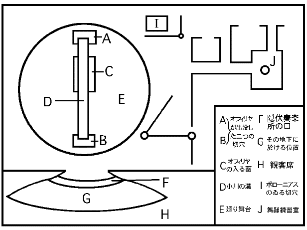

序、さらば沙翁舞台よ
すでに国書の御印も済み
幼友達なれど 毒蛇とも思う二人の者が
使節の役を承わり、予が行手の露払い
まんまと道案内しようとの魂胆。
何んでもやるがよいわ。おのが仕掛けた地雷火で、
打ち上げられるを見るも一興。
先で穿つ穴よりも、三尺下を此方が掘り
月を目掛けて、打上げなんだら不思議であろうぞ。
いっそ双方の目算が
同じ道で出会わさば、それこそまた面白いと云うもの。
〔と云いつつ、ポローニアスの死骸を打ち見やり〕
この男が、わしに急わしい思いをさせるわい。
どれ、この臓腑奴を次の部屋へ引きずって行こう。
母上、お寝みなされ。さてもさて、この顧問官殿もなあ
今では全く静肅、秘密を洩らしもせねば、生真目でも御座る。
生前多弁な愚か者ではあったが
ささ、お前の仕末もつけてやろうかのう。
お寝みなされ、母上。
〔二人別々に退場――幕〕
幼友達なれど 毒蛇とも思う二人の者が
使節の役を承わり、予が行手の露払い
まんまと道案内しようとの魂胆。
何んでもやるがよいわ。おのが仕掛けた地雷火で、
打ち上げられるを見るも一興。
先で穿つ穴よりも、三尺下を此方が掘り
月を目掛けて、打上げなんだら不思議であろうぞ。
いっそ双方の目算が
同じ道で出会わさば、それこそまた面白いと云うもの。
〔と云いつつ、ポローニアスの死骸を打ち見やり〕
この男が、わしに急わしい思いをさせるわい。
どれ、この臓腑奴を次の部屋へ引きずって行こう。
母上、お寝みなされ。さてもさて、この顧問官殿もなあ
今では全く静肅、秘密を洩らしもせねば、生真目でも御座る。
生前多弁な愚か者ではあったが
ささ、お前の仕末もつけてやろうかのう。
お寝みなされ、母上。
〔二人別々に退場――幕〕
そうして、ポローニアスの死骸を引き摺ったハムレットが、下手に退場してしまうと、「ハムレットの
その四、五人の人達は、どれもこれも、薄い削いだような脣をしていて、話の
彼等は口を揃えて、一人憤然とこの劇団から去った、風間九十郎の節操を褒め
が、
その第三幕第四場――王妃ガートルードの私室だけは、ほぼ沙翁の原作と同一であり、ハムレットは母の不貞を責め、やはり侍従長のポローニアスを、王と誤り垂幕越しに刺殺するのだった。その装置には、背面を黒い青味を帯びた
所が、その演技の進行中、法水は絶えず客席に眼を配り、何者か知りたい顔を、捜し出そうとするような、素振りを続けていた。そして、幕切れ近くなると、王妃との対話中いきなり正面を切って、
「僕は得手勝手な感覚で、貴方の一番貴重な、一番微妙なものを味い尽しましたよ。ですから、それを現実に経験しようとするのは、よそうじゃありませんか」と誰にとなく大声に叫んだのだった。
勿論そのような言葉が、台本の中にあろう道理とてはない。或は、日々の悪評に逆上して、溜り切った欝憤を、舞台の上から劇評家達に浴せたのではないかとも考えられた。けれども、冷静そのもののような彼が、どうしてどうしてさように、端たない振舞を演じようとは思われぬのである。然し、そうして根掘り葉掘り、さまざま詮索を凝らしているうちに、ふと彼等の胸を、ドキンと突き上げたものがあった。
と云うのは、はじめ座員に離反されて、失踪して以来、かれこれもう、二ヵ月にもなるのだが、それにも拘らず、生死の消息さえ一向に聴かない風間九十郎のことである。
事に依ったら、何時の間にか九十郎は、この劇場に舞い戻っていたのではないか。そして、こっそりと観客の中にまぎれ込んでいたのを、法水の
何か陰暗のうちに、思いも付かない黙闘が行われているのではないか――そう考えると、はやそれから、秘密っぽい匂が感じられて来て、是非にも、最奥のものを覗き込みたいような、ときめきを覚えるのだった。
もしやしたら、この壮麗を極めた沙翁記念劇場の上に、開場早々容易ならぬ暗雲が漂っているのではないか――そうした怖れを浸々と感ずるほどに、この劇場は、既に風間の魂を奪い、彼の望みを、最後の一滴までも呑み尽してしまったのであった。
然し、何より読者諸君は、法水が戯曲「ハムレットの
その一篇は、「黒死館殺人事件」を終って、暫く閉地に暮しているうち、作られたものだが、もともとは、女優
現に孔雀は、劇中のホレイショに扮しているのだが、この
つまりその娼婦を、男装させて連れ帰ったと云うのが、悲劇の素因となり、全篇を通じて、色あでやかな宮廷生活が描写されて行く。そして、ホレイショはまず、嫉妬のためにオフェリヤを殺す。しかも一方では、王クローディアスやレイアティズとも関係するばかりでなく、末には
その女ホレイショの媚体は、孔雀の個性そのものであるせいか、曽ての寵妃中の寵妃――エーネ・ソレルの妖

従ってこの淫蕩極まりない私通史には、是非の論が
然し、劇壇方面には、意外にも非難の声が多く、結局、華麗は悲劇を殺す――と罵られた。勿論その声は、風間九十郎に対する隠然たる同情の高まりなのであった。
風間九十郎は、日本の沙翁劇俳優として、恐らく古今無双であろう。のみならず、
（
けれども彼の、俳優としての才能はともかくとして、その持論である演出の形式には、誰しも狂人として耳をかそうとはしなかった。そして、疲れ切った身に孔雀を伴い、敗残の姿を故国に現わしたのが、つい三年前の昭和×年――。
そう云えば、滞外中九十郎が、第二の妻を持ち、その婦人とは、ラヴェンナで死別したと云う噂はあったけれども、その浮説が遂に、混血児の孔雀に依り裏書された訳である。
然し、日本に戻ってからの九十郎には、言葉に不馴れのせいもあって、それは非道い、厭人癖が現われていた。のみならず、
二十年前
所へ、向運の
ところが、そこへ他の資本系列が加わるにつれて、九十郎の主張も、いつかは顧みられなくなってしまった。それではせめて、クルーゲルの沙翁舞台とも――と嘆願したのであったが、それさえ一蹴されて、ついに［＃「ついに」は底本では「つひに」］その劇場は、バイロイト
もちろん舞台の
しかも、それと同時に、彼を悲憤の鬼と化してしまうような、出来事が起った。と云うのは、一座が九十郎を捨てて、一人残らず劇場側に走ってしまったからである。
恐らくその俸給の額は、絶えず生計の不安に怯え続け、安定を得ない座員の眼を、
それなり、バルザックに似た巨躯は、地上から消失してしまい、あの豊かな胸声に、再び接する機会はないように思われた。が、また一方では、それが法水麟太郎に、
あの一代の
従って、興業政策の上から云っても、彼の特別出演は上々の首尾であり、毎夜、この五千人劇場には、立錐の余地もなかった。そして、恰度その晩――五月十四日は、開場三日目の夜に当っていた。
ハムレツトの寵妃
登場人物
ハムレツト法水 麟 太郎
王クローデイアス ルツドヰツヒ・ロンネ
王妃ガートルード衣川暁子
父王の亡霊 ┐
├淡路 研二
侍従長ポローニアス┘
ポローニアスの息
レイアテイズ小保内 精一
同娘
オフエリヤ久米幡江
ホレイシヨ陶孔雀
登場人物
ハムレツト
王クローデイアス ルツドヰツヒ・ロンネ
王妃ガートルード
父王の亡霊 ┐
├
侍従長ポローニアス┘
ポローニアスの息
レイアテイズ
同娘
オフエリヤ
ホレイシヨ
一、二人亡霊
彼が、長剣の
検事は法水の顔を見ると、
「ねえ法水君、実はさっきから、このお嬢さんが、君に役者を止めろ――と云っているんだぜ。とにかく、俳優としてよりも、探偵としての、君であって欲しいと云うんだからね」
その言葉が幡江の表情を硬くしたように思われた。久米幡江は、半ば開いた百合のように、弱々しい娘だった。
頸は茎のように細長く、皮膚は気味悪いほどに透明で、血の管が一つ一つ、青い絹紐のように見える。そして、肩の顫えを見ても、何か抑え切れない、感動に
幡江は法水を振り向いて、その眼を
それに、法水は静かに訊ねた。
「ねえ、何を泣いているんです。貴方のお父さんの行衛なら、僕はその健在を、断言してもいいと思いますがね。いいえ、大丈夫――十日の興業が終ってからでも、結構間に合うんですから。今朝の英字新聞で、僕の事を
「ええ、お話したいのは父の事なんですけど」
幡江の瞳が、異様に据えられたかと思うと、みるみる全身が、はちきれんばかりに筋張って来た。「貴方は、いまの幕の亡霊を、淡路さんの二役だとお思いになりまして」
その亡霊と云うのは、云うまでもなく、ハムレットの父王の霊の事である。
所が、配役の際に、その亡霊役一つだけが余ってしまったので、止むなく法水は、台本を訂正しなければならなくなった。
と云って、王クローディアスに扮する、独逸人俳優ルッドイッヒ・ロンネは
つまり、垂幕の蔭を
然し、何故に幡江は、その二役の淡路に疑念を抱いているのであろうか。法水はその一度で、好奇心の綱をスッポリと冠せられてしまった。
「では、その吹き換えの謎を、淡路君に訊ねてみましたか。合憎とあの男は、僕の剣を喰ったが最後なんです。何しろ殺されたポローニアスなんですからね。あの狭い中で、動けばこそですよ。それで、僕に斯んな愚痴話をしましたがね。――苦しいの何んのって、垂幕に向っては、碌々充分に
「ええ、あの方は、私にいい加減な嘘を並べ立てました。だって、あの亡霊は、
幡江の
が、それを聴いた瞬間、検事と熊城は椅子を
「それは斯うなんですの。ねえ法水さん。貴方だけは真面目にお聴き下さるでしょうね。いまの幕の間に、私は下手の舞台練習室に居りました。それは、入水（小川に落ちて溺れるオフェリヤ最後の場面）の際の廻転に馴れるよう、実は稽古して居たからなんです。と云いますのは、
「そうですか。しかし、貴女に休演されることは、この際何よりの打撃なんですからね。出来ることなら、少しくらいの無理は押し通して頂きたいんですよ。本当は、二、三日静養なさるといいのですがね。わけてもそう云う、幻覚を見るような状態の時には……」
法水は、撫然と語尾を消したが、それが却って、幡江の熱気を掻き立てた。
「ああ、貴方も幻だと仰言るのね。ところが法水さん、その幻が――それが、どうしてどうして、幻とは思われないほど、鮮かな形で現われたのですわ。御存知の通り、あの室には入口が二つありまして、一つは舞台裏に、もう一つは舞台の下手に続いているのですが、その時舞台から、退場して来る亡霊と云うのが、なんと父では御座いませんでしたろうか。ねえ法水さん、あれは他の

「しかし、髭が動いたと云う事に、何か特別の理由でもあるのですか」
「ええ、無論のこってすとも。それが隠そうたって、隠し
「ああ、それが淡路君なんでしたか。それなら、何もそう、
そうしてはじめて法水は、気抜けしたように莨を取り出した。しかし、遂にその一人二役は、幡江の心中に描かれていた、幻とだけでは収まらなくなってしまった。
「いいえ、もうすっかりポローニアスになっていて、亡霊の衣裳を側に置いたまま、寝そべっていたのです。けれどもあの方は、一向何気なさそうな顔付で、舞踊練習室は通らなかった――と云うのでした。そう云えば、あの室の前には、横へそれる廊下が御座いますわね。所が、その時
幡江は膝頭をわなわなと顫わせ、辛ろうじて立っているように思われた。
所で、彼女がいま、九時と云う時刻を口にしたのだったが、その理由を云うと、道具建ての関係で時間が遅れた場合には、続く二場を飛び越えて、次を、オフェリヤ狂乱の場とする定めになっていたからである。
しかし、不思議な事には、検事の時計も、熊城のも、指針がまだ九時には達していなかった。そして、今がかっきり八時五十分だとすると、その時計が九時を指している頃は、ほぼ八時三十分頃ではなかっただろうか。更に、その時計を進ませたと云うのには、何か幡江の追及を
が、思い付いたように、化粧鏡の
「幡江さん、僕はこの品一つで、一人の男の心動を聴き、呼吸の香りを嗅ぐ事が出来ました。とうにこの通り、貴女のお父さんから、消息を貰っているのですよ」
そう云って、突き出したのは、洒落れた婦人用の角封だった。が、内容を読み終ると、同時に三人は、呆気にとられた眼で法水を見上げた。
それは、韻律を無視した英詩で記されたところの、次のファン・レターに過ぎなかったのである。
In his costumes he recites
The word the poet to his dear ones composed: "Hinder Bortier, it is per stages. The flower of Heaven, once dreamed; now enabled. Farea tell happy field; where joy forever dwells. Hail quake viles. Lo, unexpected tort"
〔訳文〕 彼は舞台の上よりして、詩聖がその最も愛するもののために作りし章句を唱わん。――隠れたる最奥の紅玉石よ、そは凡ゆる場面にあり。天国の花よ、曽て夢みしも、今はなされたり。老いたる序詞役共は、幸ある園の事を語る。そこには、喜びとわに住むとかや。いざ、劇評家共を戦かせよ。見よ。この予期せざりし鋭さを。
幡江は、訝しさを満面に漲らせて顔を上げ、
「これが、一体どうだと、仰言るんですの。一向に、何んでもないでは御座いませんか」
そうは云ったが、法水の唯ならぬ気配に圧せられて、ただただ幡江は、相手の開こうとする脣を、
「所が、幡江さん、これを
と法水は、
すると、見る見る不思議な変化が現われて、はては天国が奈落と変り、その紙のあちこちから見るだに薄気味悪い、爪の形が現われ出たのだった。
"Hinder, Border, Upper Stages, the flower of Heaven, once dreamed; now fabled. Farewell, happy field; where joy forever dwells, Hail, quake stiles. Lo. unexpected mort.
〔訳文〕 奥、前、そして高舞台よ。天国の花よ。そは曽て夢みしかど、今や欺かれたり。さらば幸ある園、喜びとわに住めど。来たれ、列柱を震い動かさん。見よ、予期せざりし獲物の死を報ずる角笛を。
「ねえ幡江さん、
と風間の狂熱に魅せられたかの如く、法水は瞬きもせず云い続けた。
「ねえそうでしょう。真理は憎悪を生むと云います。そして、虚無と死とは、その強い衝動から一歩も離れ去る事が出来ないものなんです」
その紙片には、彼女にとって一番懐かしい人の手が、以前につけた跡をとどめている。幡江はさながら、屍体でも覆うかのように、その紙片を二つに折って見まいとした。
が、その堪え難い苦痛を、どうしても取り去る事が出来ないように思われて来るといきなり癲癇のような顫えが襲い掛かって来た。
「ねえお父さん、貴方は私を戦かしている、恐怖の事などは考えられないのでしょう。ああ、いつまでも、あの意地悪い幻にとりつかれているのでしょうか。いまも貴方のお声が――あの圧しつけるような響が、まざまざと耳に入って参ります。でも私だけには、見ない振りをして、通り過ぎて下さるでしょうね。お父さん、あの最後の夜、貴方は私達を前にして、斯う云う言葉を仰言いましたわね。この劇場には形体も美もなく、云わば、
「幇間――。ああ貴女も、お父さんと同じ皮肉を僕に云うのですか。
そう云って法水は、空虚を衝かれたような気持を、わずかに爆笑でまぎらわせてしまった。が、その時、開幕の
そして、次の幕――「エルシノア城外の海辺」が始まったのである。
然し、その幕から始めて、観客には見えないけれども、暗澹とした雲が、舞台を一面に覆い包んでしまった。
俳優達はどれもこれも、演技が調子外れになり、台詞の節度がバラバラになった。そして、詰まらない事が神経をたかぶらせて、いっそ何事か起ってしまえば、この悪血が溜り切った血の管が、空になるだろうなどと思われもするのだった。けれども、その後の二場は何事もなく終り、
所が、幡江は、あのような打撃をうけた後のためか、それとも自分の現在が、オフェリヤに似ていて、心の奥底に秘められた、悲しい想い出を呼び醒まされたためでもあろうか。花渡しの場になると、彼女自身が、或はそうなったのではないかと思われたほどに、狂いの迫力が法水を驚かせてしまった。
そして、一人一人に渡す花にてんで違ったものを持ち出したのを見て、三人は秘かに顔を見合わせたのだった。
（オフェリヤの
と、弥生の春の花薔薇、いとしのオフェリヤは、そうして残りの花を、舞台の縁にふり撒くのだった。
がその時、幡江は暫く前方の空間を瞶めていて、そこに何やら霧に包まれながら遠退いて行くようなものが、あるかに思われた。
続いて舞台が廻ると、そこはエルシノアの郊外。いよいよ女ホレイショが、オフェリヤを小川の中に導く、殺し場になった。
そこは、乳色をした小川の流れが、書割一体を蛇のようにのたくっていて、中央には、
然し、その
孔雀は
さて演技が殺し場まで進むと、狂いのはかなさにオフェリヤは、ホレイショに導かれて、小川の中に入って行く。と、最初は
そして、花の冠をつけた弥生の花薔薇は、そのまま脚光の蔭にある、切り穴から奈落に消えてしまうのであった。
所が、そうしてオフェリヤの屍体が舞台から消え去ったとき、何んともたとえようのない、驚くべき出来事が観客席に起った。
最初は桟敷の後方から、柱が揺れる――と叫ぶ声がしたかと思うと、その劇動が、この大建築を忽ち震い始め、ぎっしりと詰まった五千人の観客が、悲鳴を上げながら総立ちになった。
然し、その数瞬後には、また夢から醒めたような顔になって、一度はたしかに覚えた筈の震動が、不思議にもその瞬間限りで去ってしまったのに気が附いた。そして、再び視線を舞台に向けたとき、そこに、何事が起ったのであろうか。いきなり、金雀枝の幹にしがみついて、孔雀がつんざくような悲鳴を上げた。
見ると、驚いたことには、一端は消え去った筈のオフェリヤの屍体が、再び今度は、書割際の切り穴から現われて来た。彼女は、ジョン・ミレイズの「オフェリヤ」そのままの美しさで、キラキラ光る水面を、下手にかけて流れ行くのである。そして、前方の切り穴の上を越えて、上体を
すると、その
オフェリヤの頸には、その左側がパクリと無残な口を開いていて、そこから真紅の泉が、混々と湧き出して行くのである。しかも、その液汁の重さのためか、
二、オフェリヤ狂乱の謎
「まるで熊城君、この顔は少しずつ眠って行ったようじゃないか。だんだんと脣の上の微笑が分らなくなって行って、遂に消え失せる。そして、その脣が一寸触れたかと思うと、再び分れる。然し、気のせいか、どうも、眼球が少し突き出ているようじゃないかね。たしかにこれは、云い表わし難い言葉の幽霊だよ。この事件の幽霊は、淡路の一人二役にもなければ、柱の震動でもない。僕は、この一点にあると思うのだ」
と白い皮膚の上の脈管を、しげしげと見入りながら、法水はまるで、詩のような言葉を吐いた。
突如起った惨劇のために、その日の演技はそれなり中止されて、人気のない、ガランとした舞台に立っているのは、この三人きりであった。
幡江の全身には、この世ならぬ蒼白さが拡がっていた。手足をダラリと
右の
「熊城君、君は忘れやしまいね。風間九十郎の挑戦状の中に、
検事は、風間の魔術に酔わされて、声にも眼にも節度を失っていた。
「うん、地震でもないのに、この大建築を
熊城は屍体から顔を離して、プウッと烟を吐いた。
「この事件でも、舞台の床一重が、天国と地獄の境いじゃないか。サア法水君、奈落へ下りるとしようか」
いずれにしても惨劇が奈落に於いて行われた事は明らかなので、舞台の上は、事件とは何んの関係もないのだった。それから三人は、
が、それに先立って、一ことオフェリヤを運んで行く、小川の機械装置に触れて置かねばならぬかと思う。
それは、前後二つの切り穴を利用して、間に溝を作り、その中で、
それが、オフェリヤを沈ませる装置であって、最初幡江がその函の中に入ると、下には扇風器が設けられてあって、その風のために、水面に浮んだような形で、裳裾が拡がる。そして、廻りながら、腰を落して行くので、てっきり観客の眼には、泥の深みへ、はまり込んで行くように見えるのだった。
幡江はそれが終ると、扇風器の上にある、簀子の上で仰向けになって、きっかけを、下の道具方に与える。と今度は、調帯が幡江を載せたまませり上って行って、その儘前方の、切り穴から奈落に落し込むのである。
所が、血の滴りは、調帯の恰度中央辺から始まっていて、最初の切り穴からそこまでの間にはなかった。それを見ても、幡江が刺された場所は明白であり、その高さも、六尺近いものなら、し
然し、調査は簡単に終って、三人は法水の楽屋に引き上げた。
「とにかく、犯人が未知のものでないだけでも、助かると思うよ」
検事は椅子にかけると、すぐさま法水を振り向いて云った。
「つまり、この事件の謎と云うのは、却って犯罪現象にはない。むしろ、風間の心理の方に、あるのじゃないかね。真先に、殺すに事かき自分の愛児を殺すなんて、どうも風間の精神は、常態でないような気がする」
「うん」熊城は、簡単に合槌を打った。
が、法水は椅子から腰をずらして、むしろ驚いたように、相手を瞶めはじめた。
「なるほど
「なに、告白悲劇……とにかく、冗談は止めにして貰おう」
と
「どうして冗談なもんか。現に前の幕で、オフェリヤは一々花を取り違えたじゃないか。然し、決してそれは、幡江の錯乱が生んだ産物ではないのだよ。あの女の皮質たるや、実に整然無比、さながら将棋盤の如しさ。ねえ熊城君、僕はエイメ・マルタン（花言葉の創始者）じゃないがね。人は自分の情操を書き送るのに、
そう云って法水は、机の蔭から取り出した花束を、卓上に置いた。二人はその色や香りよりかも、法水が繰り拡げて行く、美しい霧に酔わされてしまった。
「君達にも、記憶が新しいだろうとは思うが、幡江は幕切れの際に、父の最期と云い、これだけの花を舞台に撒き散らしたのだ。最初は
「許してくれ――成程、よく判った」そう云って検事は、皮肉な微笑を法水に投げた。
「然し、それだけでは、決して深奥だとは云われない。第一それでは、風間が吾が子を殺さねばならなかった心理が説明されていない」
「それから王妃の衣川暁子には、二つの花の名を云ったにも拘らず、折れた
検事の抗議にも
「それは折れた母の愛――なんだよ。ねえ支倉君、この
それから、レイアティズの小保内精一には、
あの方と云って、その場にいないポローニアス役の淡路研二には、
勿論その二人には、風間に対する裏切者と云う意味の、風刺を送った訳だが、寧ろそれは、主謀者だったロンネに送られねばならないだろう。
所がまた、王に扮したあの男に、渡した花と云うのが、頗る妙なんだよ。第一に、
それを見ると、二人は曽て恋仲であり、最近には疎んぜられていたにも拘らず、なおかつ幡江は、ロンネの身を
ハハハハ、一つ僕も、その花を取ろうかね。僕は、幡江の最奥のものに触れた手を、しばらくそのまま、そっとして置きたいのだよ」
法水は冷然と云い放って、湯気のなくなった紅茶を、一気に啜り込んだ。すると、その時扉の向うで、衣摺れがしたかと思うと、その隙間から、楽屋着を押えた孔雀の腕が現われた。
彼女は、ズカズカ入り込んで来て、法水に声をかけた。
「それなら、私が
「然し、幡江と云う人は、父親に殺される理由が、一番少ない人物なんじゃありませんか」
そう云って検事は、孔雀の顔を見上げ、瞼の縁に浮んでいる、奇麗な血管を眺め入った。この淫らがましい獣のような娘を、少しでも見ていると、誰しも忌わしい誘惑を感じ、
孔雀は臆面なく、肥った腰を椅子の上にポンと投げ出して、
「じゃ、まだお気付きにならないのね。父なんて、この小屋の何処にいるもんですか。第一幡江さんが、今夜の亡霊は父が勤めたのだ――なんて云いましたけども、真逆にそんな事、御信用なさってるんじゃありますまいね。もしそうでしたら、法水さんの新釈ハムレットには、至極縁遠い方ですわ。ねえ検事総長、貴方はあのフロイト式解釈には、感覚がないんですの。あの亡霊はハムレットの幻覚で、もともとは、クローディアスにとついだ母に、嫉妬を感じたからなんですって。ねえ
と孔雀は、
「たしかこの花降しは、警察の注意で、今夜からしたのでしたね。だが、これに僕は、妙な
「じゃ、私が犯人だって云うんですの」
孔雀は眼をクリクリさせたがパッと口を開いて、真赤な
「サア見て頂戴。キプルスでは口に入れた穀粒に、唾のついていない時には、その人間が犯人なんですってね。たとえ、あの時、雪のように降って来る花弁が、私の身体を隠し了せたにしてもだわ。どうして、あの短い間に、奈落まで往復出来るでしょうか。ああ私、ほんとうは隠し通そうとしたのでしたけど、思い切って云ってしまいますわ。実は、父を見たのです。見たどころかいきなり後から脊を打たれて……」
「なに、脊を打たれて……」
熊城は
「よく、オフェリヤの棺と間違えますが、衣裳部屋にある櫃の中から、もう一着、亡霊の衣裳を取り出して来いと云われました。私は初日から、雑夫の中に父が混っているのを知っていたのです。だって、喰べ物を口にするとき、辺を見廻わすなんて、誰が父以外にあるもんですか。それで、私は最初断りましたの。すると、私が着換えをしていると、またやって来て、あの大きな影法師に
そう云って、取り出した、莨の
「すると、それは
法水はその横顔をチラリと見て、事務的な訊き方をした。
「僕は
「ああ、あの
孔雀はちょっと、白い
「最初は多分三時前後だったでしょう。それから二度目に来た時は、正確に憶えていますけども、それが六時十五分だったと思いますわ」と云って、放逸な焔を眼一杯に輝かせた。
そして桃を包んだそのもののような、
然し、孔雀の垂れた睫毛の間が、しんみりと濡れて来て、
「もう訊く事がないのなら、今度は私の話を聴いて頂戴。ほんとうに法水さん、つくづく今度と云う今度は、役者が嫌になりましたの。もうこの興業が終ったら、いっそ生活を変えて、私、子供でも生んでみたくなりましたわ」
孔雀が去った後でも、何やら四肢五体を、ほぐらかすようなものが残っていた。法水はプカプカ莨を灰にしながら、黙考に耽けっていたが、熊城は絶えず揉手をしながら、悦に入っていた。
「法水君、結局君の智能が孔雀を救った事になるじゃないか。そうでなければ、
今までも、あの不可解な震動については、妙に法水は沈黙を守っていた。その時も、彼は別の事を考えていたらしく、いきなり検事を振り向いて、
「ねえ支倉君、君が知ろうと欲している、心理上の論理だが、一つ僕は、その確固たるものを握っている。だが、九十郎と幡江は、おなじ同肉同血の親子じゃないか。その中で、たとえどのような動機があるにしてもだ。ああも
と暫く莨を持ったまま、ポツネンとしていたが、その時
ロンネは鳥渡見ただけでは、三十前後にしか見えないけれども、彼は四十を幾つか越えていて冷たい片意地らしい、
「法水さん、貴方ほどの方が、
「いや、運命的なのは、オフェリヤ狂乱そのものじゃありませんか」
法水は甲を顎にかって、
「実は、君に聴こうと思って、待ち兼ねていたのですが、たしかこの劇場の中には、もう一つ――ねえロンネ君、もう一つ屍体がある筈ですがね」
その瞬間、ロンネの長身が竦んだように戦いて、殆んど衝動的らしい、苦悩の色が浮かび上った。そして、ゴクゴク咽喉を鳴らして、唾を
「僕は、不図した機会から、誰一人知らない――君と幡江との関係を知る事が出来たのです。然し、幡江は狂乱の場で、自分のために紅水仙をとったのですが、それを花言葉で解釈すると、心の秘密と云う事になるのです。だが、まあそれはそれとして、それから何故、台詞を台本通りに云わなかったのでしょうか。
法水の意表に絶した透視のために、勝敗がこの一挙に決定してしまった。
ロンネの蒼ざめた影のような身体が、扉から
やがて、検事がいそいそとして、その意味を口にした。
「君は早々に、この事件の賽の目を、二つだけにしてくれた――その事は、何んと云っても感謝するよ。幡江が、自分の仇敵であるロンネから離れられず、あまつさえ、その種を宿しているのだとしたら、風間の憎悪は、第一自分の肉身にかかって行くだろう。また、妻のあるロンネにとると、幡江が仇し子を生むと云う事は、どんなに怖しい事か。そして、幡江から堕胎を拒絶されたとすれば、それは
「いや、そうされるのは、多分法水さんの方でしょうよ。いま小保内のやつが、最後の幕で
と背後で太い
この老練な新劇界の古
「何しろ小保内には、照明掛りの証言があるんですからね。自然気の強い事も云える訳ですが僕は今始めて、舞台裏にも、絶海の孤島と云うやつがあるのを知りましたよ。所で、これだけ云ってしまえば、もうそれ以外に、お訊ねになる事はないと思いますが、ああそうそう、貴方から幡江さんの幻覚論を伺うんでしたっけな」
「いや、あの
法水は、
「あの時、亡霊に吹き変ってから、君はたしか奈落へ下りたでしょう。そうすると、君にとって何んとも不幸な暗合が生まれてしまうのです。君は、クリテウムヌスの『
「なに、それでは僕が、その間に何か、仕掛でも作って置いたと云うのですか」
淡路の顔には、突然憤怒が漲って、両手をわなわなと顫わせた。が、そうしているうちに、その硬張った筋が次第に弛んで行って、何か激情を解かして行くものが、あるように思われた。
やがて、淡路は切なそうな諦めの色を現わして、
「止むを得ません。自分の
と奈落と云う言葉を口にすると、左り眼を奇妙にビクリと瞬き、淡路は風間の存在を裏書した。そして、最後に付け加えて、
「そんな訳で、今では僕も小保内も、恩師に反いた事を後悔して居ります。そして、貴方と云う侵入者に、決して快よくない事は、今も聴いた小保内の言葉でもお判りでしょう。だが、どうして師匠が捕まるもんですか。決して決して捕まりっこありませんぞ」
遂に、法水の巧妙なカマが、淡路の口を割り、あの朦朧とした幻が、実在に移される事になった。そうして次々と、焦点面に排列されてゆく風間の姿は、最早疑うべくもないものになってしまった。
然し、法水の顔は、益々冴えないものとなって、間もなく衣川暁子が、入って来たのも気附かないほどであった。
風間九十郎の妻、幡江の母暁子は、既に二十余年も新劇のために闘い続けている。そのためか、暁子の容姿からは女らしさが失せていて、眼は落ち窪み、鼻翼には硬い肉がついて、何かしら、冷酷な感情と狂熱めいた怖しさを覚えるのだった。
彼女は座につくと、胸をせり上げ、荒々しい語気を吐いた。
「どうしたって云うんでしょう。あのメデアみたいな男が、捕まらないなんて。彼奴は、自分の目的のためなら、それが吾が子だって、殺し兼ねませんわ。私、あの男の眼も胸も剥り抜いてやって、いっそ片輪にしてしまいたいんですの」
「いや、僕は決して、そうとは信じませんね」
法水は強く否定して、今までにない厳粛な調子になった。
「そうなったら第一、人間生活の鉄則がどうなってしまうのでしょう。父と
「では、父でないとすると」
暁子は冷やかに云ったが、顔には包むにも包み了せようのない、憎悪の波が高まって行った。
「ですから、いま貴方が云われたメデアと云う名を、僕はクリテムネストラに変えて貰いたいんです。姦通・嫉妬・復讐――ねえ暁子さん、ロンネと幡江は、今までどんな関係にあったのでしょうか」
と風間が帰朝してからも、尚絶とうともしないロンネとの不倫な関係を、法水は暗に仄めかした。そして、暁子の怖し気な眼を見やりながら、
「なるほど子供は、自分の血と肉を分けた、一部に違いありません。だがもし、その愛と同じ程度の、憎しみが
と云いかけたときに、暁子は、聴くまいとするものの如く立ち上った。そして、引っ痙れた顔を、法水にピタリと据えて、
「よろしい、私は自分自身で、風間を探し出しますわ。でも貴方は、私に斯う仰言りたいのでしょう。お前は、吾が子の死の悲しみを忘れ、そうしてまでも、自分だけを
そうして、暁子は去ってしまったが、今の問答は何んとなく、法水の詭弁のように思われた。四人をほしいままに踊らせたと云うのも、それぞれに底を割ってみれば、風間を捜し出す、前提に過ぎないのではないだろうか。
然し、それまでに宏壮な場内を、隅々までほじり散らしたにも拘らず、遂に風間は発見されなかった。そして、事件の第一日は空しく終ってしまった。
三、風間九十郎の登場
翌日は、他の劇団から傭った女優で、欠けたオフェリヤを補い、沙翁記念劇場はいつも通り蓋を明けた。
が、前夜の惨劇が好奇心を唆ったものか、その夜は補助椅子までも、出し切った程の大入りだった。然し、オフェリヤ殺し場は、遂に差し止められて、あの無残な夢を新たにしようとした、観客を失望させた。
法水は演技の進行中も、絶えず俳優の動作に注意を配っていたが、恰度四幕目が終って休憩に入ると、何んと思ったか、暁子と孔雀を自分の室に招いた。
「僕はとうとう、一つの結論に達しましたよ。と云うのは、あの当時、風間は奈落には居りませんでした。実は舞台の前方――
と冒頭吐かれた言葉には、女二人のみならず、検事も熊城も驚かされてしまった。熊城は透さず抗議した。
「冗談じゃない。
「そうなるかねえ」
法水は、
「知っての通り、屍体の顔は至極平静な表情をしている。所が、奇妙な事には、眼球が非道く突き出ているんだ。そこに、あの奏楽所からでないと行えない、一つの徴候が含まれているんだよ。ねえ熊城君、幡江が一気に咽喉をかき切られた場所と云うのは、実を云うと、奈落の中央ではないのだ――その端にあったのだよ。つまり、舞台から奈落に落ち込んで行く間は、身体がくの字なりになり、胸が圧されて、非道く窮屈な姿勢だったに相違ない。所が、
と息の間を置かずに、法水は云い続けた。
「たしかに、あれからうけた印象は、悽愴の極みだったよ、まさにその超自然たるや、力学の大法則を徹底的に蹂躪している。然し、あの現象は、この建築固有のもので、決して人の手で行われたのではない。当然、あの場面には起るべきだったし、ただ風間がそれを知っていて、舞台裏の注意を、自分から他に、外らそうとして利用したに過ぎない。ねえ支倉君、群衆心理の波及力には、悪疫以上のものがあると云うじゃないか。所が、その病源と云うのが、有名なツェルネル錯視なんだよ。現に、桟敷の円柱を見給え。横につけられた溝が、上から斜めに捲かれていて、それが一本置きに向き合っているだろう。だから、花弁が散って来て、その反映がチラチラ明滅すると、柱の平行線が、かわるがわる
その間他の四人は、生気のない脱殻のように茫然としていた。まさに、変異の極みとのみ思い込んでいた劇場の震動も、蓋を割ってみれば他愛もなく、五千人の眼の中に、追い込まれてしまったではないか。
暁子は、指を神経的に絡ませて云った。
「ですけど、風間の方は一体どうなるんでしょう。なるほど、そう云う仮説は、貴方がたには是非必要でしょうけれども、私達には、風間の身体一つさえあればいいのですからね」
「それは次の幕に……」
法水は確信を仄めかして、立ち上った。
「実は、風間が奏楽所を利用したのを知って、僕はその場所に最短線を引いてみました。するとそれに当ったのが、道具置場じゃありませんか。たしか彼処には、次の幕に使うオフェリヤの棺などが置いてありましたね。僕はその棺に、舞台の上から風間を指摘して、抛り込んでやりますよ」
次の場面「墓場」の幕が上ると、書割は一面に、灰色がかった丘である。雲は低く垂れ、風の唸りが聴こえて、その荒凉たる風物の中を、ハムレットがホレイショを伴って登場する。
やがてハムレットが、オフェリヤの棺を埋めた、墓穴の中に飛び下りると、その瞬間、王妃の暁子が絹を裂くような悲鳴を上げた。何故なら、その重た気な棺の蓋を、法水が両手に抱えてもたげ始めたからである。
所がその中には、
そこには一人の、腐爛した男の屍体が、横たわっていたのである。
「ああ、風間だ。風間が……」
暁子は、地底から湧き出たような声で叫んだ。
意外にもそれは、幡江の下手人と目されている、風間九十郎だったのである。
着衣も、腐汁に浸みた所だけは、腐ってボロボロになり、そこから黄ばんだ、雁皮みたいな皮膚が［＃「皮膚が」は底本では「皮腐が」］覗いている。眼窩には、…………………………溜っているだけで、黒いバサバサした髪が………………………跡には、肉の表面がドス黒い緑色に見える。そして、その上には、瘠せた蛔虫のような形、…………………………………………………。
既に、風間九十郎の上には、見る影もない腐朽の
「こら坊主、香を焚け、香を……」
墓穴の中から躍り出ると、法水は台本にもない台詞を叫んだ。そして観客に悪臭を覚られまいとした。
然し、続いて今度は、満場を総立ちにさせたほどの出来事が起った。
と云うのは、レイアティズがハムレットに争いを挑むところで、その役の小保内精一が長剣を抜いて突っ掛かって来ると、いきなり蹌踉いたものか、その剣光を目がけて、孔雀が飛び出したのであった。それはまったく、電光のような
その刹那、孔雀の全身が像のように静止して、何か言葉のような引っ痙れが、ひくひく頬の上で顫えていた。そして、唇の両端から、スウッと血の滴りが糸を引くと、何やら模索しているようだった眼が一点に停まり、やがて孔雀は、棒のように仆れてしまった。
その同時に起った二つの出来事に依って、事件の帰趨は、
然し、その翌夜になると、法水は劇場に一同を集め、事件の真相を発表した。淡い
「最初に順序として、僕はこの事件に現われた、風間の影を消して行きたいと思うのです。勿論あの手紙は偽造であり、淡路君の経験も孔雀の陳述も、みな、供述の微妙な心理から生まれ出たものに相違ありません。然し、幡江が淡路君の亡霊姿を見て、それを九十郎と信じたのは、まさに偽りではない。が、さりとてまた実相でもなく、実は幡江の錯覚が、起した幻に過ぎないのです。と云うのは心理学上の術語で仮現運動と云って、十時形に小さい円を当てて、その中心に符合させる。そして、その二つを、かわるがわるに入れ換える。すると、十字の横の一に、先がピクピク動くような、錯覚が起るのです。もともと、僕の
そうして、幡江に映った心の魔像を消してしまうと、法水の舌は、続いて孔雀の分析に移って行った。
「所で、虚言の心理と云うものには、得てして
法水の、凄まじい推理力から
「それでは、オフェリヤの
「それは支倉君、実は斯うなのだ。孔雀の瞬きが、ある一つの微妙な言葉となって、僕に伝えてくれたのだよ。よく会話中に見る事だが、酸いような感覚を覚えると、僕等はどっちかの眼を閉じるものなのだ。所が、オフェリヤの棺と――僕が云った時に、孔雀は無意識にそれを行った。それで僕は、もしかしたらその感覚に、孔雀は死臭を経験しているではないかと考えたのだ。また、その神経現象は、奈落――と云った時の淡路君にも現われたけれども、それは却って、
「それでは、一体、九十郎は何時誰に殺されたのだね」
と今度は、熊城が疑題を投げた。
「云うまでもなく孔雀にさ。そして、その時期は、二た月ほどまえ家族と別れた――その直後だろうと思うのだがね」
法水は一向に素っ気ない声で云った。
「それには、九十郎の驚くべき特徴を、知る事が出来たからなんだ。あの男は、俳優とは云え半聾だったのだ。然し、内耳の基礎膜には、微かに能力が止まっているので、それが九十郎に頗る科学的な発声法を編み出させたのだよ。それは、耳を塞いで物を云うと判る事だが、ハ行やサ行などの無声音以外は、欧氏管を伝わって内耳に唸りを起す。然しその無声音も、胸腔に響かせて胸声にして出すと、それが幾つもの段階に分かれて、響いて来るのだ。つまりそれに依って、九十郎は自分が出した声を判別する訳だが、勿論相手の言葉は、
そこで、法水が一息入れると、聴き手は漸く吾に返えり、惑乱気味に嘆息するのだった。
人間を弾奏する――孔雀が最後の別れの際に、九十郎を抱擁したのは、その目的がまさにそうではないか。さながら、
続いて法水は、音響病理学者のグツマンで、ダーウィンの友人ドンダース教授の実験などを例に引いたが、それは
熊城は、
「それでは、舞台の上にいた孔雀が、どうして奈落の幡江を殺す事が出来たのだね」
「それがこの事件の
そうして余す所なく、犯行の説明を終えると、法水は
然し、その一片には、故国の空に憧がれる、孔雀の不思議な心理が語られてあった。
――もう幕にも間がないままに、鉛筆で走り書きに記す事に致します。貴方はいま、次の幕には必ず風間を指摘すると仰言いましたわね。それで、何もかも終ってしまったのに気が付いたのでした。何故かと申せば、次の幕に現われるものと云えば、風間を入れたオフェリヤの棺以外に何がありましょう。私はもう、最後の覚悟をかためねばならなくなりました。ですけど、私は何故風間を殺し、幡江にも手を加えねばならなかったのでしょうか。
と申しますのは、外でも御座いませんが、あの風間と云う男は、まこと真実の父ではないので御座います。当時私の母は、父に先立たれて、私を胎内に抱えたまま、路傍を
所が、日本に連れて来られてからと云うものは、日増し私には、郷愁が募って参りました。あの濃碧の海、同じ色のような空――街中はひっそり閑としていて、塔があちこちに聳え、時折は家毎の時計が、往還の真中でさえ聴こえる事が御座います。ねえ法水様、北イタリー特有の
で、いつのまにか私は、あの荒凉たる淋しさを、どうする事も出来なくなってしまいました。外面は、さぞ
ですから、幡江さんを手にかけたのは、父のない私の、本能的な嫉妬なので御座います。父と娘――あの血縁の神秘は、それを欠いているものにとれば、寧ろ嘲けりに過ぎません。
どうか法水様、いつまでも私をお憶い出し下さいませ。そうして、その時はきっと、あの古びた